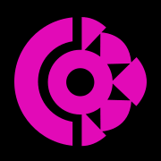

Cybersecurity
Protection across users, endpoints, identities, applications, cloud and data—aligned to risk and operational priorities.
- Zero trust
- Threat defense
- Data security
Cybersecurity · IT infrastructure · Business continuity
We connect cybersecurity and IT priorities with proven technology, specialized partners and the commercial structure required to move from risk to resilient execution.
What we do
CONTROLITS connects enterprise and public-sector teams with the right cybersecurity, infrastructure, OT and IoT, and continuity technologies. We align manufacturers, integrators and decision-makers to build a credible route from requirement to deployment.
See how we workCore capabilities
Four connected disciplines for protecting users, data, infrastructure and operations.
Protection across users, endpoints, identities, applications, cloud and data—aligned to risk and operational priorities.
Secure compute, networking, cloud and observability foundations designed for performance, control and scale.
Visibility, segmentation and protection for connected devices, industrial environments and cyber-physical systems.
Backup, BCDR, disaster recovery and cyber recovery strategies that keep critical services available and recoverable.
Selected technology portfolio
We help organizations and delivery partners assemble the right security stack across users, applications, data, cloud, networks and cyber-physical systems.
Unified network, endpoint and identity security.
Unified securityUnified cloud security, SASE and managed threat protection.
SASE & MDRAI-driven endpoint, cloud and identity protection.
Threat protectionExposure management across modern attack surfaces.
Exposure managementData-centric cloud, web and private access security.
SASEDigital forensics, incident response and data risk management.
Forensics & data riskData security and risk-aware user protection.
Data securityZero trust application control and endpoint protection.
Application controlBusiness continuity, backup and disaster recovery for modern IT.
BCDRProtection for cyber-physical and industrial systems.
OT security
ClarotyTechnology selection and availability are evaluated by project, territory and delivery requirements. Brand names belong to their respective owners.
Our engagement model
We identify security gaps, infrastructure priorities and qualified opportunities with measurable value.
We bring together clients, cybersecurity vendors, integrators and specialized delivery partners.
We align architecture, commercial model, responsibilities, risk and the decision path.
We maintain momentum through validation, negotiation, deployment planning and execution.
Why CONTROLITS
We translate cyber risk and infrastructure requirements into credible technology and commercial conversations. Our role is to reduce friction, identify the right fit and keep critical initiatives moving.
Let’s talk
Tell us what needs to be protected, modernized or recovered. We will help identify the right technology, counterpart and route to execution.
info@controlits.com+1 954 9006030495 Brickell Ave, Suite 3206